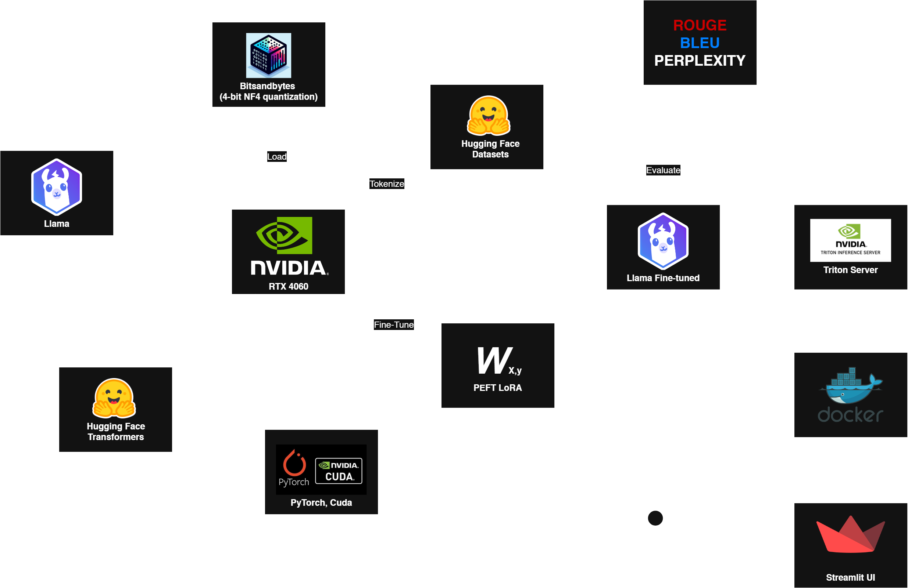
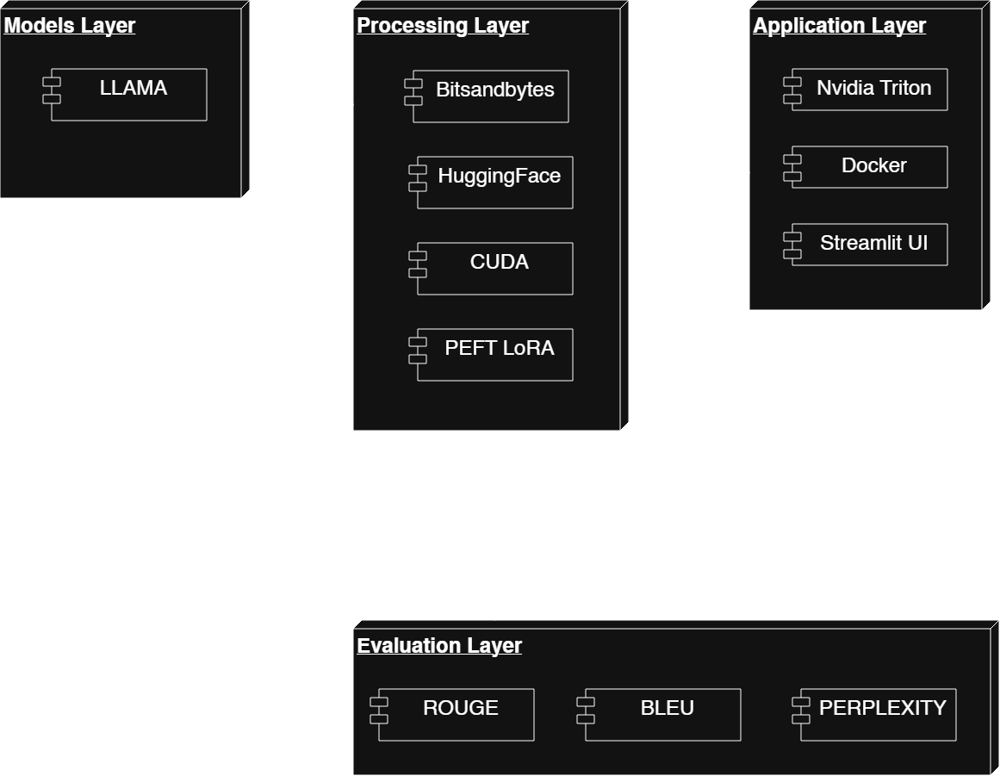
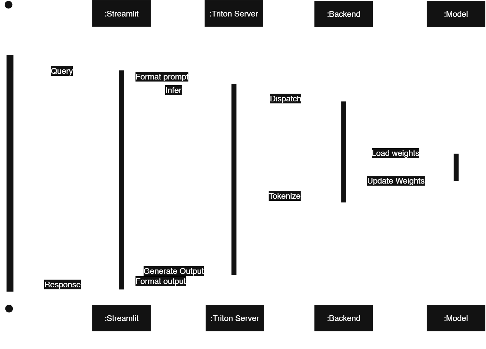

Fine-tuning & Deploying LLMs with NVIDIA NeMo
High-Performance Model Engineering on RTX Infrastructure
The Architecture: Precision Model Tuning
A vertical AI approach using NVIDIA’s high-performance stack to fine-tune, evaluate, and deploy localized LLMs.
Video Demonstration
Base Model Inference & Quantization
Optimizes Tiny Llama with 4-bit NF4 quantization to train powerful models on standard hardware efficiently.
Advanced Tokenization & Preprocessing
Leverages Hugging Face Datasets and mature prompt templating to ensure consistent model learning.
Parameter-Efficient Fine-Tuning (PEFT)
Utilizes PEFT and LoRA to update a small subset of weights, drastically reducing compute requirements.
Rigorous Model Evaluation
Evaluates models comprehensively using ROUGE, BLEU, and Perplexity metrics before production deployment.
NVIDIA-Native Production Serving
Deploys via NVIDIA Triton Inference Server optimized for RTX GPUs with real-time CUDA monitoring.
The Engineering
Architectural Pattern: Layered Architecture (N-tier)
The system follows the Layered Architecture (N-tier) pattern, ensuring a clean separation of concerns across different modules of the application:
- Presentation Layer: The Streamlit frontend (
ui/app.py) handles user interactions and displays model responses. - Application Layer: Python clients orchestrate the prompt formatting and communicate with the inference server via HTTP/gRPC.
- Serving Layer: NVIDIA Triton Inference Server provides high-performance model serving, dynamic batching, and metrics.
- Data & Model Layer: Hugging Face Datasets are used for data preparation, while PyTorch, Transformers, and PEFT manage the model weights and LoRA adapters locally.
This layered design maps to the following operational workflow stages:
- Ingest & Preprocess: Datasets are locally tokenized and formatted using prompt templates.
- Train: LoRA fine-tuning alters model behavior using QLoRA-style training with NF4 quantization.
- Serve: The quantized base model and LoRA adapters are served behind Triton for production-grade inference.
- Consume: The Streamlit frontend interacts with the Triton endpoints to generate and display answers.
- Evaluate: Output quality is measured locally using ROUGE, BLEU, and Perplexity metrics.
Functional Requirements
- Model Quantization: Load and process large language models using 4-bit NF4 quantization.
- Efficient Fine-Tuning: Train domain-specific models using LoRA and PEFT without full retraining.
- Automated Evaluation: Score model outputs locally against ROUGE, BLEU, and Perplexity metrics.
- Production Inference: Serve models with high availability using NVIDIA Triton Inference Server.
Non-Functional Requirements
- Performance: speed and responsiveness via CUDA optimization and Triton dynamic batching.
- Security: protection against unauthorized access handled through secure local network deployment.
- Usability: ease of use provided by a responsive Streamlit conversational interface.
- Reliability: system stability and availability maintained by robust Docker containerization.
- Scalability: ability to handle growth via RTX GPU scaling and efficient LoRA adapter swapping.
- Maintainability: ease of updates and fixes using Hugging Face pipelines and standardized tokenization.
- Portability: ability to run in different environments due to isolated Docker and PyTorch environments.
Architecture Diagram

Component Diagram

Sequence Diagram
